Parent page: Datalink Quality Dashboard
Space: CNSDLK
Current package: Coverity-Tool-Final-20260831.zip
Manual document: Coverity_Tool_User_Manual.docx
The Coverity Disposition Tool is a Windows desktop utility for reviewing Coverity findings, checking each finding against local source code, recording reviewer decisions, and pushing final dispositions back to Coverity Connect.
| File | Purpose |
|---|---|
| Coverity-Tool-Final-20260831.zip | Final Windows package containing the executable and required runtime files. |
| Coverity_Tool_User_Manual.docx | Word user manual with screenshots and workflow explanation. |
| Item | Description |
|---|---|
CoverityTool.exe | Main desktop application. |
_internal | Required runtime libraries. Keep this folder beside the executable. |
docs | User manual, sample report, and sample source files. |
run_tool.bat | Batch launcher for the packaged tool. |
CoverityTool.bat | Alternate launcher. |
README.md / README.txt | Short setup and troubleshooting notes. |
CoverityTool.exe and _internal in the same folder..exe to another location; the app needs the bundled runtime files.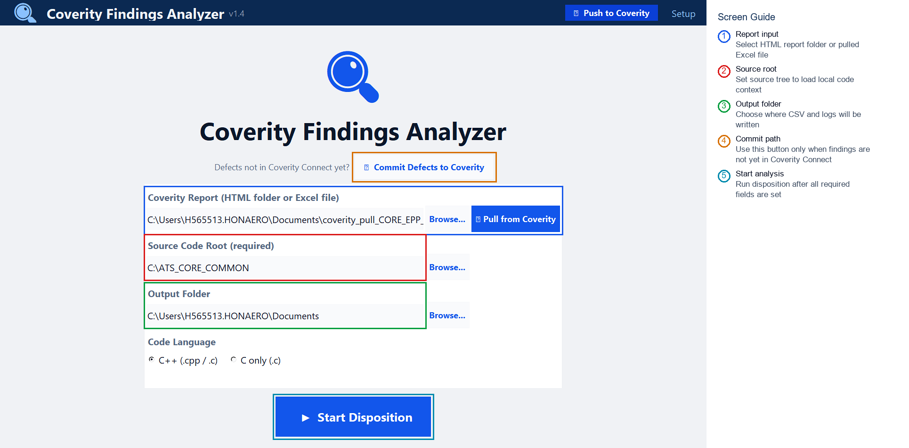
Use this page to select the input report or pulled Excel file, choose the matching source checkout, and define the output folder. Start analysis only after all required fields are populated.
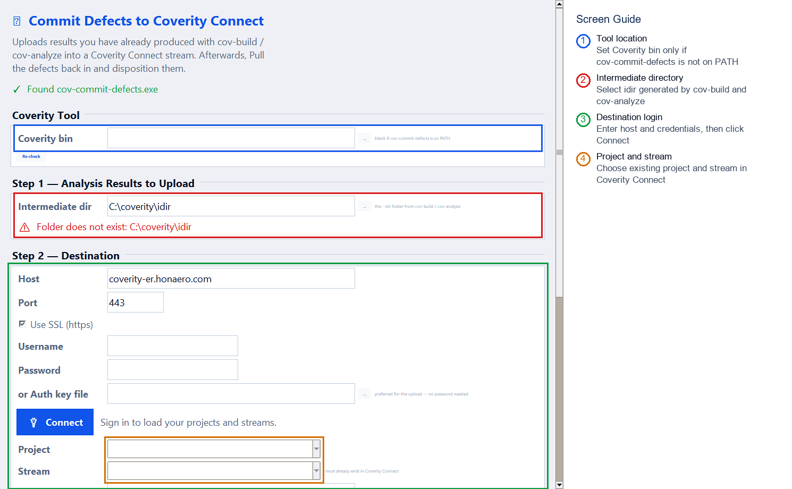
Use this dialog only when findings must be committed to Coverity Connect from an existing Coverity intermediate directory. Connect first, choose the project and stream, then commit after validation is clean.
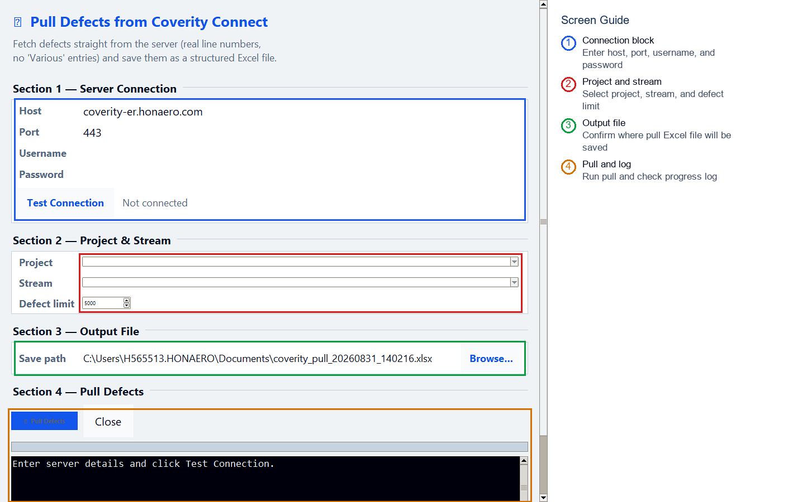
The top view contains server connection details, project/stream selection, defect limit, and output file path. Test the connection before selecting project and stream.
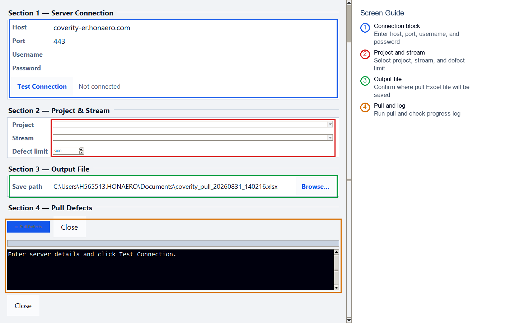
The bottom view contains the pull action, progress area, and log. Use this area to confirm whether the pull completed successfully or failed due to network, credential, or permission issues.
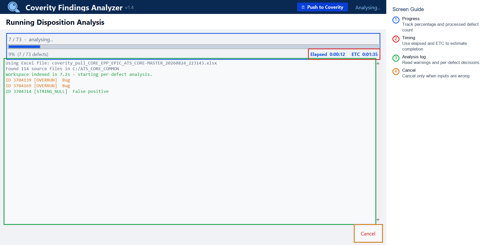
The progress page shows processed defect count, percentage, elapsed time, estimated completion time, and detailed analysis messages.
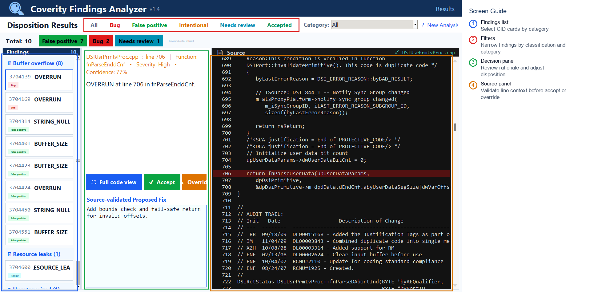
Use the Results page as the main review queue. Select each CID, review rationale and source context, then accept or override the suggested disposition.
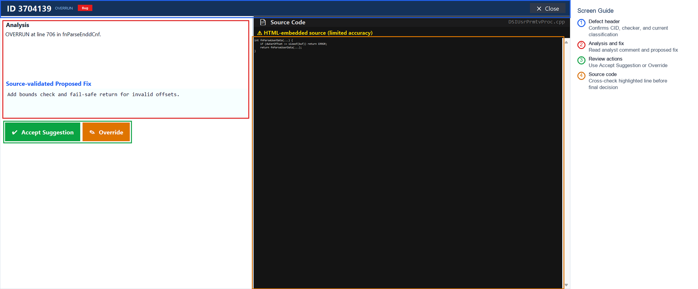
Use the Full Detail window for high-confidence review of one CID. Confirm the checker, classification, rationale, proposed fix, and highlighted source before making a final decision.
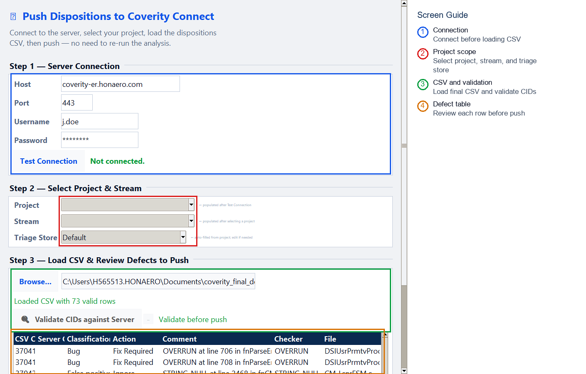
Use this view to connect to Coverity, choose project/stream/triage store, and load coverity_final_decisions.csv.
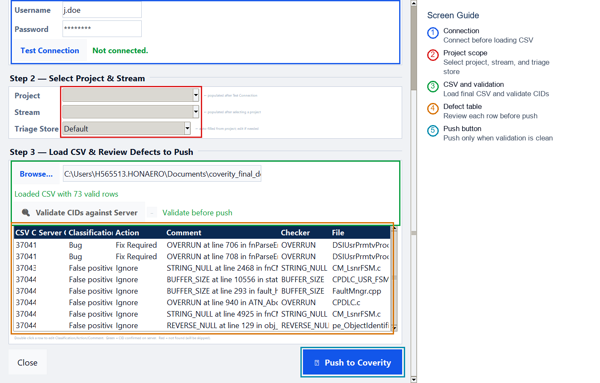
Use this view to validate CIDs, review rows, dry run if needed, and push final decisions to Coverity.
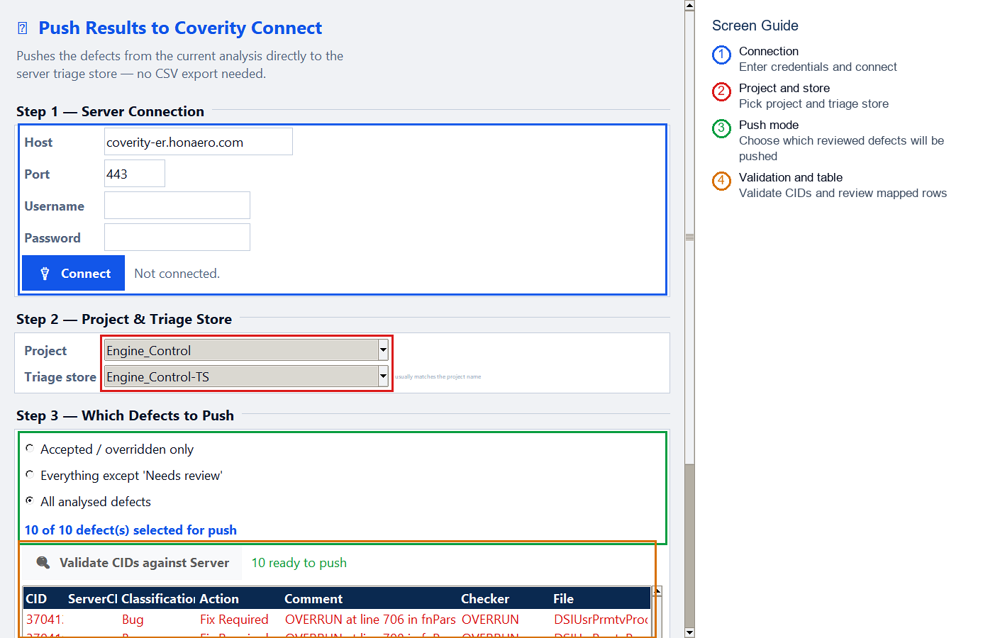
Use Direct Push when the current in-memory review results should be pushed without exporting and reloading CSV. Choose the push mode according to team policy.
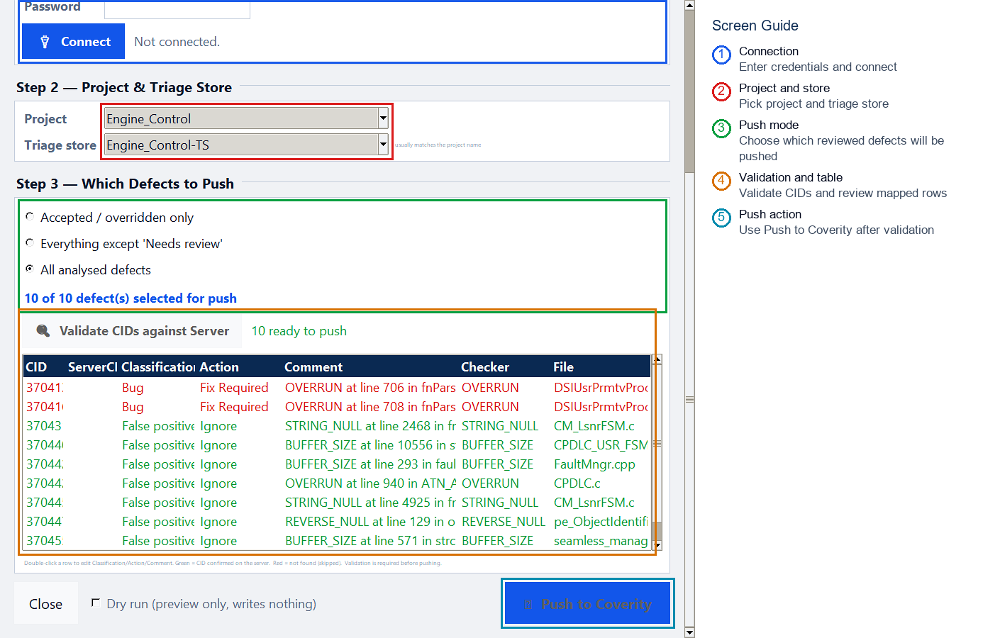
Use the lower Direct Push view to validate mapped CIDs, review selected rows, dry run, and submit dispositions.
| File | Description |
|---|---|
coverity_pull_<stream>_<timestamp>.xlsx | Defects pulled from Coverity Connect. Use as Setup input. |
coverity_dispositions.csv | Tool-generated suggestions for review. |
coverity_final_decisions.csv | Reviewer-approved decisions for push. |
audit.jsonl | Decision evidence and traceability log. |
*_pull_log.txt | Pull diagnostics and troubleshooting log. |
| Issue | Action |
|---|---|
| App does not open | Keep CoverityTool.exe and _internal together. Try run_tool.bat. |
| Cannot connect to Coverity | Verify VPN/network, host, port, username, password, and permissions. |
| No projects or streams visible | Confirm the user has access to the Coverity project and stream. |
| Results do not show local code | Verify Source Code Root points to the matching source baseline. |
| Push fails | Validate CIDs, confirm triage store, and check project/stream selection. |
For support, provide the tool package version or zip name, screenshot of the failing screen, pull or push log message, CID, checker name, project, stream, and whether the issue occurs during Pull, Analysis, Review, CSV Push, or Direct Push.